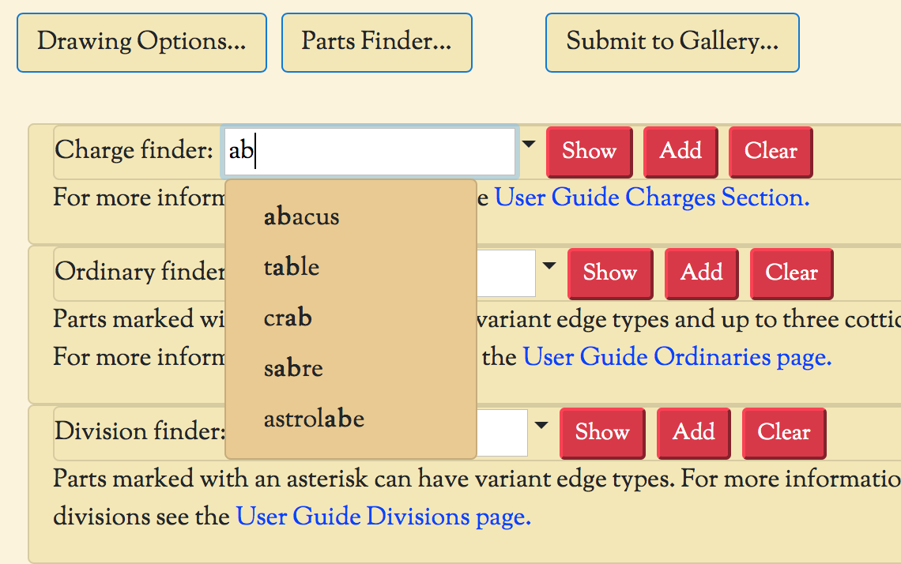
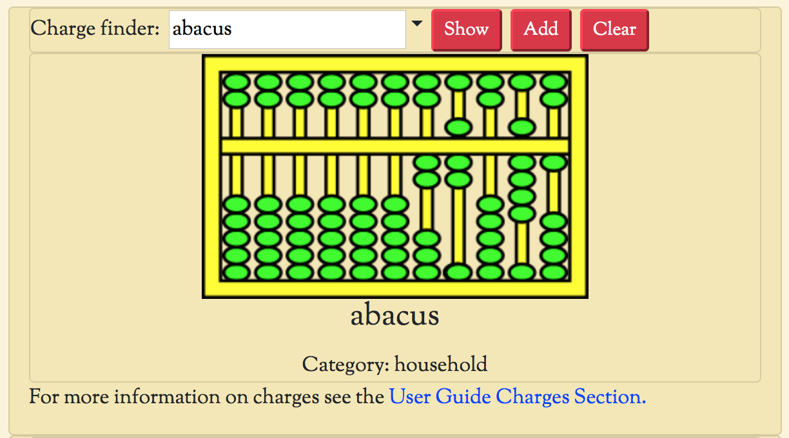

DrawShield can draw a lot of stuff - but heraldry is a huge subject and there is much that DrawShield doesn't (yet!) cover. To help determine what DrawShield currently supports there is a "Parts Finder" accessible from the create page.
This allows you to search a reasonably up-to-date list of charges, ordinaries, divisions and fancy edgetypes that are currently available. Each category has its own search box, typing characters into a search box will reveal a dropdown containing the names of items containing those characters anywhere in the name of the item.
If you click on the name of an item you can then click on the "Show" button to reveal an example image of the item. You can also click the "Add" button, which will append the selected item to the end of your current blazon in the edit box. Note that you will still need to add tinctures, positions etc., this is just a convenience shortcut, not a replacement for the Build Page. You can use the "Clear" button to remove the example image.
Clicking on the "Parts Finder" button with the parts finder visible will make it invisible again (as will click on either the "Drawing Options" or "Submit to Gallery" buttons)
The images shown for charges contain some additional hints and information, although some work is still required on the part of the user! Charge images are shown in colour, usually a bold yellow. Anything that is yellow will be replaced by the main "body" tincture; so for example in the Abacus image above the frame of the abacus will be given the main tincture specified in the blazon.
Other, primary colours (bright blue, red or green) are used to indicate features that can be given a different colour. You will have to use your own initiative to figure out what these features are called I'm afraid, but in most cases this is fairly obvious. In the abacus for examples the beads are shown in bright green and hence we can guess that we say something like "an abacus sable beaded or" and we would be correct. The abacus would be drawn with a black frame and yellow beads.
If we only provide a single tincture in the blazon then all the parts will be given that tincture, even if there are features available - so "an abacus or" will be drawn with both frame and beads yellow.
The only exception to this tincturing is that most charges will have stroke lines drawn in a mid-grey, and any areas that are pure black, pure white or an intermediate shade of grey will remain unchanged in the image, regardless of the specified tincture. This for example, ensures that eyes stay white and that shading is maintained correctly.
Finally, below the charge image there is some text showing the "category" that the charge is in. This is an internal category and has no heraldic meaning, it just helps me to organise the many hundreds of charges internally and groups together charges by a combination of "theme" and "how they are treated artistically". The category is hence not massively useful but might give you a hint as to what some of the more obscure charges are supposed to represent - for example the charge "Hemp Break" is revealed to be in the "tools" category.